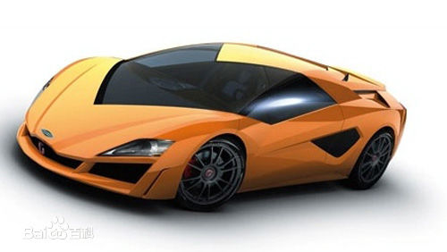

It 互联网
金融
汽车
房地产
互联网技术是指在计算机技术的基础上开发建立的一种信息技术。 互联网技术通过计算机网络的广域网使不同的设备相互连接， 加快信息的传输速度和拓宽信息的获取渠道，促进各种不同的软 件应用的开发，改变了人们的生活和学习方式。互联网技术的普 遍应用，是进入信息社会的标志。
金融的本质是价值流通。金融产品的种类有很多，其中主要包括银行、 证券、保险、信托等。金融所涉及的学术领域很广，其中主要包括： 会计、财务、投资学、银行学、证券学、保险学、信托学等等。
我国国家最新标准《汽车和挂车类型的术语和定义》(GB/T 3730．1—2001)中对汽车有如下定义：由动力驱动，具有4个或 4个以上车轮的非轨道承载的车辆，主要用于：载运人员和（或） 货物；牵引载运人员和(或)货物的车辆；特殊用途。 汽车的品牌有：大众、现代、起亚、本田、丰田等 
房地产是一个综合的较为复杂的概念，从实物现象看，它是由建筑物与土地共同构成。 土地可以分为未开发的土地和已开发的土地，建筑物依附土地而存在，与土地结合在 一起。建筑物是指人工建筑而成的产物，包括房屋和构筑物两大类.对于房地产的概念， 应该从两个方面来理解：房地产既是一种客观存在的物质形态，同时也是一项法律权利。